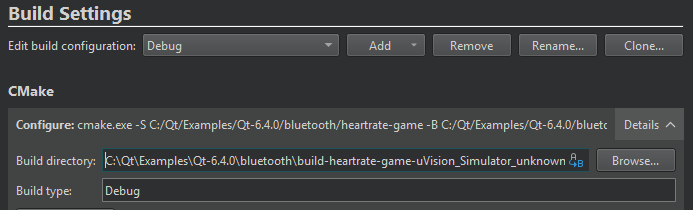
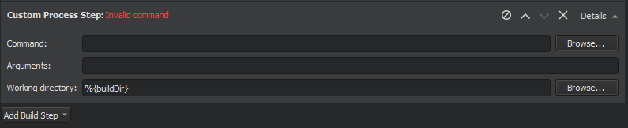

Configure projects for building
Specify build settings for the selected kit in Projects > Build & Run > Build > Build Settings.

Manage build configurations
To add a new build configuration to the list in Edit build configuration, click Add and select the type of configuration to add. The options you have depend on the build system that you selected for the project. You can add as many build configurations as you need. You can also select Clone to add a build configuration that is based on the currently selected one.
Select Rename to give the currently selected build configuration a new name.
To delete the currently selected build configuration, click Remove.
Edit build configurations
Select the build configuration to edit in the Edit build configuration field.
The available build settings depend on the build system that you selected for the project:
This topic describes the build settings at a general level.
Build on remote devices
You can build applications on remote Linux or Docker devices if you have kits that specify the devices and toolchains to use. When the build device of the kit is a remote device, such as a remote Linux or Docker device, the Browse button next to the Build directory field shows options for selecting remote directories.
Also, the Open Terminal button in the Build Environment section opens a terminal on the device.
Start external processes
Qt Creator executes external processes to accomplish tasks such as building and running applications. To execute the processes, Qt Creator uses shell commands that are native to the system. It constructs the commands from an executable name and optional command-line arguments.
The executable name is specified in the executable fields: qmake, Make, Command, or Executable. It is either derived from the project or specified manually. When you specify executables manually, you can reference environment variables and Qt Creator variables. However, no quoting rules apply.
You can specify command-line arguments in the arguments fields: Arguments, Additional arguments, CMake arguments, Command arguments, Default arguments, Extra arguments, Make arguments, or Tool arguments. You can create shell command lines that can have redirection and other advanced constructs. However, some more complex use cases, such as piping test data into the application being tested or grouping commands, are not supported because the value of the Executable field is always placed first when constructing the command.
You can use Qt Creator variables in arguments, executable paths, and working directories. That is, in all fields where you see the  (Variables) button.
(Variables) button.
Add build steps

In Build Steps, you can change the settings for the build system selected for building the project:
You can use IncrediBuild to accelerate the build process when using qmake or CMake.
To manage build steps:
- To add a build step, select Add Build Step and select the step to add.
- To disable a step you added, select (Disable).
- To change the order of steps, select
 (Move Up) and
(Move Up) and  (Move Down).
(Move Down). - To remove a step, select
 (Remove Item).
(Remove Item).
Add custom build steps
To add custom steps to the build settings, select Add Build Step > Custom Process Step.

Execute custom commands
To execute custom commands when building for embedded devices, select Add Build Step > Custom Remote Command (via adb shell) (commercial only) and enter the command to execute.
Add clean steps
You can use the cleaning process to remove intermediate files. This process might help you to fix obscure issues during the process of building a project using:
- CMake
- qmake
- Qbs
- Meson
- IncrediBuild
You can define the clean steps for your builds in Clean Steps. To add a clean step using make or a custom process, select Add Clean Step and select the step to add.

See also Configuring Projects, Select the build system, Use Qt Creator variables, Enable debugging, Setting Up QML Debugging, and Reference: Build Systems.